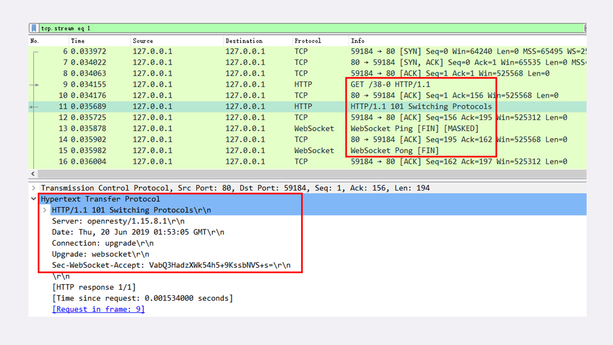

- 00 开篇词｜To Be a HTTP Hero.md.html
- 01 时势与英雄：HTTP的前世今生.md.html
- 02 HTTP是什么？HTTP又不是什么？.md.html
- 03 HTTP世界全览（上）：与HTTP相关的各种概念.md.html
- 04 HTTP世界全览（下）：与HTTP相关的各种协议.md.html
- 05 常说的“四层”和“七层”到底是什么？“五层”“六层”哪去了？.md.html
- 06 域名里有哪些门道？.md.html
- 07 自己动手，搭建HTTP实验环境.md.html
- 08 键入网址再按下回车，后面究竟发生了什么？.md.html
- 09 HTTP报文是什么样子的？.md.html
- 10 应该如何理解请求方法？.md.html
- 11 你能写出正确的网址吗？.md.html
- 12 响应状态码该怎么用？.md.html
- 13 HTTP有哪些特点？.md.html
- 14 HTTP有哪些优点？又有哪些缺点？.md.html
- 15 海纳百川：HTTP的实体数据.md.html
- 16 把大象装进冰箱：HTTP传输大文件的方法.md.html
- 17 排队也要讲效率：HTTP的连接管理.md.html
- 18 四通八达：HTTP的重定向和跳转.md.html
- 19 让我知道你是谁：HTTP的Cookie机制.md.html
- 20 生鲜速递：HTTP的缓存控制.md.html
- 21 良心中间商：HTTP的代理服务.md.html
- 22 冷链周转：HTTP的缓存代理.md.html
- 23 HTTPS是什么？SSLTLS又是什么？.md.html
- 24 固若金汤的根本（上）：对称加密与非对称加密.md.html
- 25 固若金汤的根本（下）：数字签名与证书.md.html
- 26 信任始于握手：TLS1.2连接过程解析.md.html
- 27 更好更快的握手：TLS1.3特性解析.md.html
- 28 连接太慢该怎么办：HTTPS的优化.md.html
- 29 我应该迁移到HTTPS吗？.md.html
- 30 时代之风（上）：HTTP2特性概览.md.html
- 31 时代之风（下）：HTTP2内核剖析.md.html
- 32 未来之路：HTTP3展望.md.html
- 33 我应该迁移到HTTP2吗？.md.html
- 34 Nginx：高性能的Web服务器.md.html
- 35 OpenResty：更灵活的Web服务器.md.html
- 36 WAF：保护我们的网络服务.md.html
- 37 CDN：加速我们的网络服务.md.html
- 38 WebSocket：沙盒里的TCP.md.html
- 39 HTTP性能优化面面观（上）.md.html
- 40 HTTP性能优化面面观（下）.md.html
- 结束语 做兴趣使然的Hero.md.html
- 捐赠
38 WebSocket：沙盒里的TCP
在之前讲 TCP/IP 协议栈的时候，我说过有“TCP Socket”，它实际上是一种功能接口，通过这些接口就可以使用 TCP/IP 协议栈在传输层收发数据。
那么，你知道还有一种东西叫“WebSocket”吗？
单从名字上看，“Web”指的是 HTTP，“Socket”是套接字调用，那么这两个连起来又是什么意思呢？
所谓“望文生义”，大概你也能猜出来，“WebSocket”就是运行在“Web”，也就是 HTTP 上的 Socket 通信规范，提供与“TCP Socket”类似的功能，使用它就可以像“TCP Socket”一样调用下层协议栈，任意地收发数据。

更准确地说，“WebSocket”是一种基于 TCP 的轻量级网络通信协议，在地位上是与 HTTP“平级”的。
为什么要有 WebSocket
不过，已经有了被广泛应用的 HTTP 协议，为什么要再出一个 WebSocket 呢？它有哪些好处呢？
其实 WebSocket 与 HTTP/2 一样，都是为了解决 HTTP 某方面的缺陷而诞生的。HTTP/2 针对的是“队头阻塞”，而 WebSocket 针对的是“请求 - 应答”通信模式。
那么，“请求 - 应答”有什么不好的地方呢？
“请求 - 应答”是一种“半双工”的通信模式，虽然可以双向收发数据，但同一时刻只能一个方向上有动作，传输效率低。更关键的一点，它是一种“被动”通信模式，服务器只能“被动”响应客户端的请求，无法主动向客户端发送数据。
虽然后来的 HTTP/2、HTTP/3 新增了 Stream、Server Push 等特性，但“请求 - 应答”依然是主要的工作方式。这就导致 HTTP 难以应用在动态页面、即时消息、网络游戏等要求“实时通信”的领域。
在 WebSocket 出现之前，在浏览器环境里用 JavaScript 开发实时 Web 应用很麻烦。因为浏览器是一个“受限的沙盒”，不能用 TCP，只有 HTTP 协议可用，所以就出现了很多“变通”的技术，“轮询”（polling）就是比较常用的的一种。
简单地说，轮询就是不停地向服务器发送 HTTP 请求，问有没有数据，有数据的话服务器就用响应报文回应。如果轮询的频率比较高，那么就可以近似地实现“实时通信”的效果。
但轮询的缺点也很明显，反复发送无效查询请求耗费了大量的带宽和 CPU 资源，非常不经济。
所以，为了克服 HTTP“请求 - 应答”模式的缺点，WebSocket 就“应运而生”了。它原来是 HTML5 的一部分，后来“自立门户”，形成了一个单独的标准，RFC 文档编号是 6455。
WebSocket 的特点
WebSocket 是一个真正“全双工”的通信协议，与 TCP 一样，客户端和服务器都可以随时向对方发送数据，而不用像 HTTP“你拍一，我拍一”那么“客套”。于是，服务器就可以变得更加“主动”了。一旦后台有新的数据，就可以立即“推送”给客户端，不需要客户端轮询，“实时通信”的效率也就提高了。
WebSocket 采用了二进制帧结构，语法、语义与 HTTP 完全不兼容，但因为它的主要运行环境是浏览器，为了便于推广和应用，就不得不“搭便车”，在使用习惯上尽量向 HTTP 靠拢，这就是它名字里“Web”的含义。
服务发现方面，WebSocket 没有使用 TCP 的“IP 地址 + 端口号”，而是延用了 HTTP 的 URI 格式，但开头的协议名不是“http”，引入的是两个新的名字：“ws”和“wss”，分别表示明文和加密的 WebSocket 协议。
WebSocket 的默认端口也选择了 80 和 443，因为现在互联网上的防火墙屏蔽了绝大多数的端口，只对 HTTP 的 80、443 端口“放行”，所以 WebSocket 就可以“伪装”成 HTTP 协议，比较容易地“穿透”防火墙，与服务器建立连接。具体是怎么“伪装”的，我稍后再讲。
下面我举几个 WebSocket 服务的例子，你看看，是不是和 HTTP 几乎一模一样：
ws://www.chrono.com
ws://www.chrono.com:8080/srv
wss://www.chrono.com:445/im?user_id=xxx
要注意的一点是，WebSocket 的名字容易让人产生误解，虽然大多数情况下我们会在浏览器里调用 API 来使用 WebSocket，但它不是一个“调用接口的集合”，而是一个通信协议，所以我觉得把它理解成“TCP over Web”会更恰当一些。
WebSocket 的帧结构
刚才说了，WebSocket 用的也是二进制帧，有之前 HTTP/2、HTTP/3 的经验，相信你这次也能很快掌握 WebSocket 的报文结构。
不过 WebSocket 和 HTTP/2 的关注点不同，WebSocket 更侧重于“实时通信”，而 HTTP/2 更侧重于提高传输效率，所以两者的帧结构也有很大的区别。
WebSocket 虽然有“帧”，但却没有像 HTTP/2 那样定义“流”，也就不存在“多路复用”“优先级”等复杂的特性，而它自身就是“全双工”的，也就不需要“服务器推送”。所以综合起来，WebSocket 的帧学习起来会简单一些。
下图就是 WebSocket 的帧结构定义，长度不固定，最少 2 个字节，最多 14 字节，看着好像很复杂，实际非常简单。
开头的两个字节是必须的，也是最关键的。
第一个字节的第一位“FIN”是消息结束的标志位，相当于 HTTP/2 里的“END_STREAM”，表示数据发送完毕。一个消息可以拆成多个帧，接收方看到“FIN”后，就可以把前面的帧拼起来，组成完整的消息。
“FIN”后面的三个位是保留位，目前没有任何意义，但必须是 0。
第一个字节的后 4 位很重要，叫“Opcode”，操作码，其实就是帧类型，比如 1 表示帧内容是纯文本，2 表示帧内容是二进制数据，8 是关闭连接，9 和 10 分别是连接保活的 PING 和 PONG。
第二个字节第一位是掩码标志位“MASK”，表示帧内容是否使用异或操作（xor）做简单的加密。目前的 WebSocket 标准规定，客户端发送数据必须使用掩码，而服务器发送则必须不使用掩码。
第二个字节后 7 位是“Payload len”，表示帧内容的长度。它是另一种变长编码，最少 7 位，最多是 7+64 位，也就是额外增加 8 个字节，所以一个 WebSocket 帧最大是 2^64。
长度字段后面是“Masking-key”，掩码密钥，它是由上面的标志位“MASK”决定的，如果使用掩码就是 4 个字节的随机数，否则就不存在。
这么分析下来，其实 WebSocket 的帧头就四个部分：“结束标志位 + 操作码 + 帧长度 + 掩码”，只是使用了变长编码的“小花招”，不像 HTTP/2 定长报文头那么简单明了。
我们的实验环境利用 OpenResty 的“lua-resty-websocket”库，实现了一个简单的 WebSocket 通信，你可以访问 URI“/38-1”，它会连接后端的 WebSocket 服务“ws://127.0.0.1⁄38-0”，用 Wireshark 抓包就可以看到 WebSocket 的整个通信过程。
下面的截图是其中的一个文本帧，因为它是客户端发出的，所以需要掩码，报文头就在两个字节之外多了四个字节的“Masking-key”，总共是 6 个字节。

而报文内容经过掩码，不是直接可见的明文，但掩码的安全强度几乎是零，用“Masking-key”简单地异或一下就可以转换出明文。
WebSocket 的握手
和 TCP、TLS 一样，WebSocket 也要有一个握手过程，然后才能正式收发数据。
这里它还是搭上了 HTTP 的“便车”，利用了 HTTP 本身的“协议升级”特性，“伪装”成 HTTP，这样就能绕过浏览器沙盒、网络防火墙等等限制，这也是 WebSocket 与 HTTP 的另一个重要关联点。
WebSocket 的握手是一个标准的 HTTP GET 请求，但要带上两个协议升级的专用头字段：
- “Connection: Upgrade”，表示要求协议“升级”；
- “Upgrade: websocket”，表示要“升级”成 WebSocket 协议。
另外，为了防止普通的 HTTP 消息被“意外”识别成 WebSocket，握手消息还增加了两个额外的认证用头字段（所谓的“挑战”，Challenge）：
- Sec-WebSocket-Key：一个 Base64 编码的 16 字节随机数，作为简单的认证密钥；
- Sec-WebSocket-Version：协议的版本号，当前必须是 13。

服务器收到 HTTP 请求报文，看到上面的四个字段，就知道这不是一个普通的 GET 请求，而是 WebSocket 的升级请求，于是就不走普通的 HTTP 处理流程，而是构造一个特殊的“101 Switching Protocols”响应报文，通知客户端，接下来就不用 HTTP 了，全改用 WebSocket 协议通信。（有点像 TLS 的“Change Cipher Spec”）
WebSocket 的握手响应报文也是有特殊格式的，要用字段“Sec-WebSocket-Accept”验证客户端请求报文，同样也是为了防止误连接。
具体的做法是把请求头里“Sec-WebSocket-Key”的值，加上一个专用的 UUID “258EAFA5-E914-47DA-95CA-C5AB0DC85B11”，再计算 SHA-1 摘要。
encode_base64(
sha1(
Sec-WebSocket-Key + '258EAFA5-E914-47DA-95CA-C5AB0DC85B11' ))
客户端收到响应报文，就可以用同样的算法，比对值是否相等，如果相等，就说明返回的报文确实是刚才握手时连接的服务器，认证成功。
握手完成，后续传输的数据就不再是 HTTP 报文，而是 WebSocket 格式的二进制帧了。

小结
浏览器是一个“沙盒”环境，有很多的限制，不允许建立 TCP 连接收发数据，而有了 WebSocket，我们就可以在浏览器里与服务器直接建立“TCP 连接”，获得更多的自由。
不过自由也是有代价的，WebSocket 虽然是在应用层，但使用方式却与“TCP Socket”差不多，过于“原始”，用户必须自己管理连接、缓存、状态，开发上比 HTTP 复杂的多，所以是否要在项目中引入 WebSocket 必须慎重考虑。
- HTTP 的“请求 - 应答”模式不适合开发“实时通信”应用，效率低，难以实现动态页面，所以出现了 WebSocket；
- WebSocket 是一个“全双工”的通信协议，相当于对 TCP 做了一层“薄薄的包装”，让它运行在浏览器环境里；
- WebSocket 使用兼容 HTTP 的 URI 来发现服务，但定义了新的协议名“ws”和“wss”，端口号也沿用了 80 和 443；
- WebSocket 使用二进制帧，结构比较简单，特殊的地方是有个“掩码”操作，客户端发数据必须掩码，服务器则不用；
- WebSocket 利用 HTTP 协议实现连接握手，发送 GET 请求要求“协议升级”，握手过程中有个非常简单的认证机制，目的是防止误连接。
课下作业
- WebSocket 与 HTTP/2 有很多相似点，比如都可以从 HTTP/1 升级，都采用二进制帧结构，你能比较一下这两个协议吗？
- 试着自己解释一下 WebSocket 里的”Web“和”Socket“的含义。
- 结合自己的实际工作，你觉得 WebSocket 适合用在哪些场景里？
欢迎你把自己的学习体会写在留言区，与我和其他同学一起讨论。如果你觉得有所收获，也欢迎把文章分享给你的朋友。

© 2019 - 2023 Liangliang Lee. Powered by gin and hexo-theme-book.